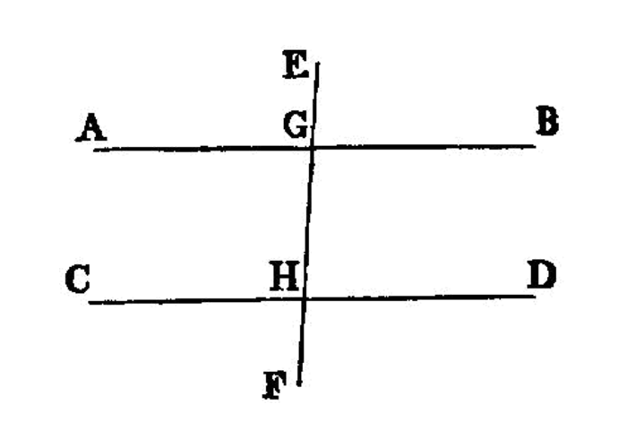

parallel angles¶
I.19
A straight line falling on parallel straight lines makes the alternate angles equal to one another, the exterior angle equal to the interior and opposite angle, and the interior angles on the same side equal to two right angles.
—Euclid
{kind=link}
For let the straight line EF fall on the parallel straight lines AB, CD;
I say that it makes the alternate angles AGH, GHD equal, the exterior angle EGB equal to the interior and opposite angle GHD, and the interior angles on the same side, namely BGH, GHD, equal to two right angles.
For, if the angle AGH is unequal to the angle GHD, one of them is greater.
Let the angle AGH be greater.
Let the angle BGH be added to each; therefore the angles AGH, BGH are greater than the angles BGH, GHD.
But the angles AGH, BGH are equal to two right angles; [I.13]
therefore the angles BGH, GHD are less than two right angles.
But straight lines produced indefinitely from angles less than two right angles meet; [I.post.5] [1]
therefore AB, CD, if produced indefinitely, will meet; but they do not meet, because they are by hypothesis parallel. [2]
Therefore the angle AGH is not unequal to the angle GHD,
and is therefore equal to it.
Again, the angle AGH is equal to the angle EGB; [I.15]
therefore the angle EGB is also equal to the angle GHD. [I.c.n.1]
Let the angle BGH be added to each;
therefore the angles EGB, BGH are equal to the angles BGH, GHD. [I.c.n.2]
But the angles EGB, BGH are equal to two right angles; [I.13]
therefore the angles BGH, GHD are also equal to two right angles.
Therefore etc.
references¶
[I.13]: /elem.1.13 “Book 1 - Proposition 13” [I.15]: /elem.1.15 “Book 1 - Proposition 15” [I.post.5]: /elem.1.post.5 “Book 1 - Postulate 5” [I.c.n.1]: /elem.1.c.n.1 “Book 1 - Common Notion 1” [I.c.n.2]: /elem.1.c.n.2 “Book 1 - Common Notion 2”